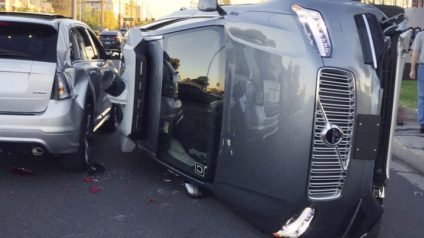
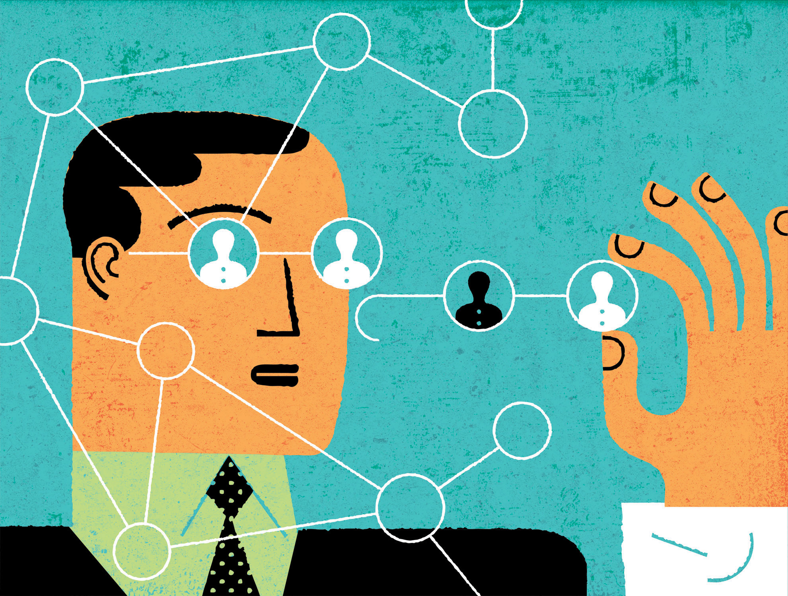
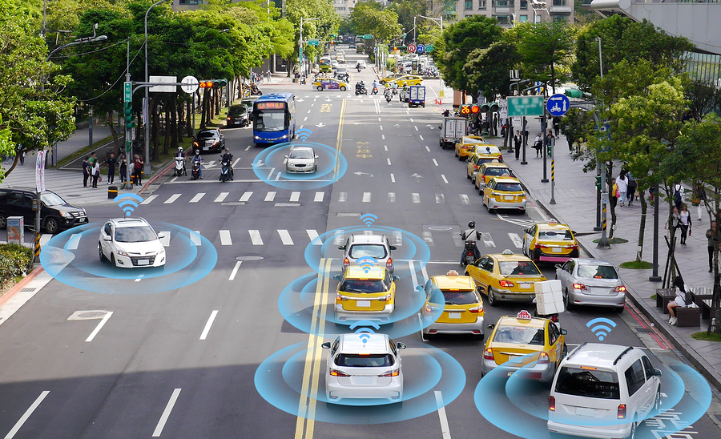

As the driver is taken out of the driving equation, it becomes even more important to identify where liability falls when something goes wrong. Upon introduction, autonomous vehicles are not going to be perfect driving machines. Regardless, autonomous vehicles need to be introduced in an ethical and socially acceptable way. To do so, professional responsibility must be upheld by members of all involved departments including designers, engineers, corporate leaders, and public policy makers in order to ensure ethical uses of this technology in society.
Professionals are the most knowledgeable about their field. As such, they have the professional responsibility to make sure that ends achieved meet ethical standards [1]. People who will design autonomous vehicles will need to take it upon themselves to ensure accessibility and ethical soundness. Designers of autonomous vehicles have a say in the higher level decision making process and will need to abide by globally agreed-upon ethical principles when developing these processes. They will also need to take into account how to accommodate the myriad of demographics that will be using this technology in order to ensure accessibility for all. In addition, designers are ethically obligated to test their products and identify any edge cases where the technology might fail. If these tests are not performed properly, it can be said that the designers did not strive to make the best technology possible, and the liability of any incident including autonomous vehicles will fall upon them.
On the other hand, programmers and engineers must verify that the designer's decisions are ethically sound when implementing them into the self-driving car [2]. These professionals are directly responsible for verifying that the design choices made by designers are sound and can be applied to the autonomous vehicle. One of the major responsibilities for the engineers developing this technology is a need to minimize algorithmic bias. While developing autonomous vehicles, it must be paramount to ensure that there is minimal algorithmic bias in order to uphold ethical standards.
Autonomous vehicles make their decisions using computer vision and other in-built algorithms that are all susceptible to various forms of algorithmic bias. An instance of this can be seen in the accident with Uber’s prototype for an autonomous vehicle. The automobile was unable to detect a pedestrian in the road causing an unfortunate accident [9]. This was especially concerning because the victim appeared similar to what many handicapped people look like. One of the causes for this accident can be linked towards representation bias in the algorithm where the dataset was not adequate with respect towards all possible scenarios the autonomous vehicles may face [3]. In this case, the model driving the vehicle did not receive sufficient data regarding identifying disabled people. In machine learning, algorithmic biases originate from the comprehensiveness of the dataset [4].
Self-driving cars are likely to be trained within confined cities or areas [5]. Since the vehicles are being trained in a localized environment, they tend to follow the norms of the region they were trained and tested in. This can lead toward biased outcomes when the car is used in different environments. Data that is based upon one city or area is destined to be biased since it is not encompassing all possible contexts the vehicle could be in.
To develop the best technology possible, programers have the professional responsibility to mitigate algorithmic bias. Fair algorithms must give similar predictions for similar individuals [3]. One way to reduce bias is by using better data collection practices to create more comprehensive training scenarios [3]. Current datasets do not always encompass the scope they need to. For example, many computer vision algorithms struggle to identify people of different ethnicities because the models were not exposed to comprehensive datasets. This type of bias can be minimized by ensuring that images used in these datasets are property labeled alongside more thorough verification strategies [4]. Nevertheless, thease biases highlight one of machine learning's shortcomings. Strongly defined labels make it difficult to properly evaluate abstract principles such as fairness and morality [6]. Although this is a problem that cannot be directly addressed with current AI research, as the field evolves, engineers will need to look for possible ways to eliminate bias through more dynamic labelling of data.
When designing ethical algorithms, biases in the program are reflective of the ethical ideologies of the people who design them [5]. A solution to this type of bias might be to include more diversity of thought in current autonomous vehicle companies to ensure that varying ethical principles are contemplated and collectively decided upon when being applied to an autonomous vehicle. Thus, it becomes the responsibility of the company to have a diverse workforce to minimize algorithmic bias.
The ideal self-driving vehicle will minimize algorithmic biases and prioritize the safety of all actors involved. It is the professional responsibility of programmers to ensure that proper ethical principles are applied when developing the algorithms behind self-driving vehicles.
On the other hand, many of the more the macro-ethical responsibilities of autonomous vehicles fall primarily onto corporate leaders and public policy makers.
With respect to self-driving cars, product liability is a serious concern. By removing a human driver from the liability equation, it becomes difficult to identify who is responsible in the case of a malfunction. Liability can fall anywhere among the company which produced the technology, the manufacturer of the vehicle, the engineers, or the user [7]. Occasionally, companies try to transfer all liability to the consumer by making them sign a terms and conditions document. Nonetheless, many of the principles of professional responsibility suggest that this is not ethically sound. Tech companies need to be held accountable if the technology the release is not the best that it can be. Corporations must take the fatal premise into account and consider the ethics of self-driving vehicles before releasing them to the public. In a future involving autonomous vehicles, companies will need to become responsible for the infrastructure that they introduce.
Public policy makers will need to take it upon themselves to write policy that will support the introduction of autonomous vehicles. They have to create policy regarding autonomous vehicles that delegates liability as dictated by the distribution of professional responsibility. These people will also need to be concerned with modifying infrastructure to support the new technology. Policy makers will need to experiment and identify the best way to introduce autonomous vehicles to urban environments [8]. Another concern for policy makers will be the interactions between autonomous vehicles and pedestrians and cyclists. City planners will need to test several ways self-driving cars can be integrated without disrupting or endangering other members of society [8]. Automation calls for a rewrite in political liability laws as anybody throughout the supply chain can be liable for a malfunctioning robot [10]. As such is the case, policy makers need to become increasingly flexible as self-driving cars are assimilated into society.
The major issue regarding the introduction of autonomous vehicles is identifying who is at fault when the machine does not behave as expected. When analyzing accidents, it is important to consider the various agents that were involved.
The value of ethics is truly seen if and only if engineers, designers, and corporate leaders uphold their professional responsibility to abide by the fundamental ethical standards that have been set for them. It is up to these departments to ensure that this new technology is integrated smoothly into our society, for the benefit of all of everyone involved.